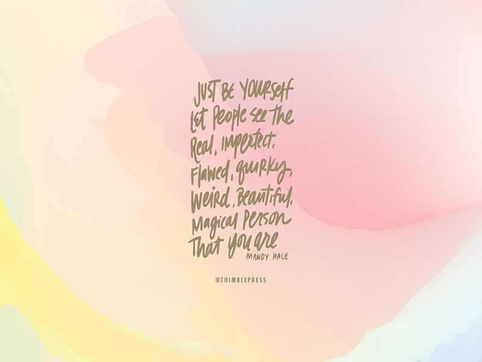
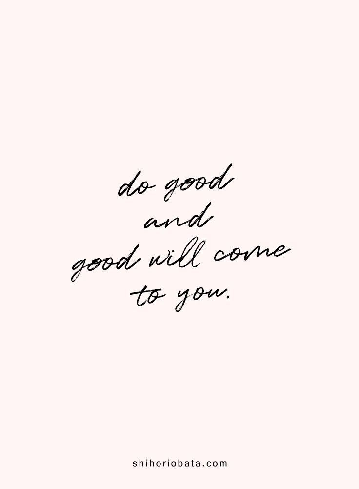
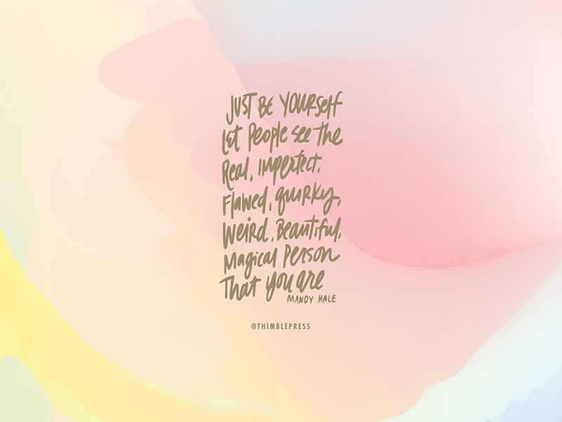
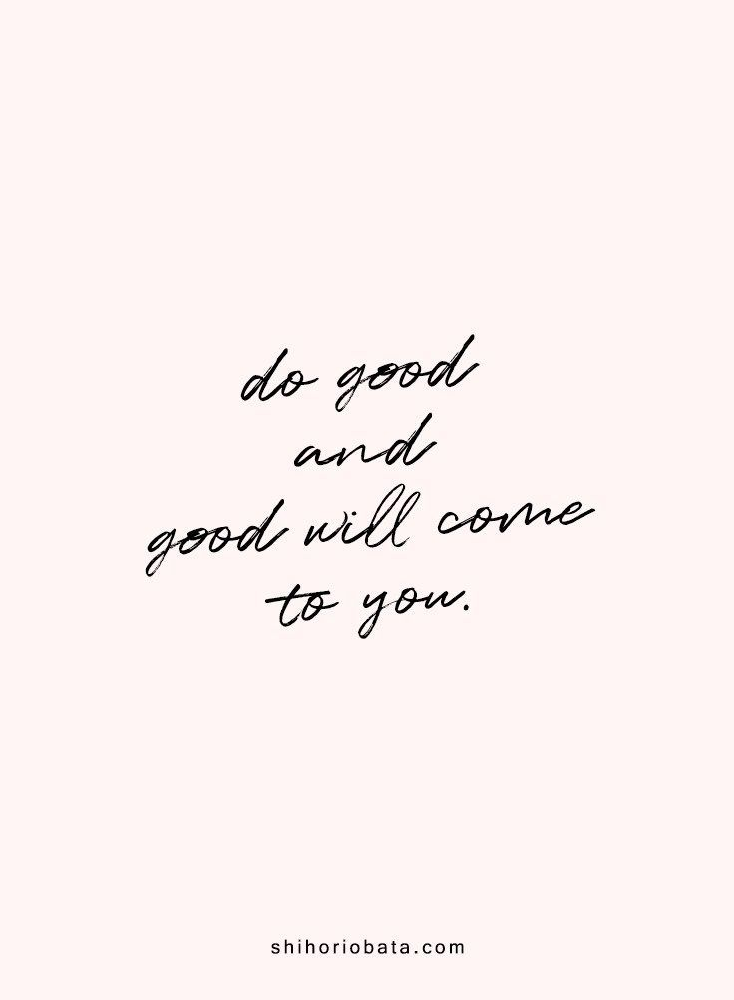

Mind Free Zone
Just how parking zone helps car to cool down their engine.Similarly we have brought you a Mind Free Zone a zone where you can sit back and relax.
Ways to Relieve Stress, Anxiety:
- Listening to music you like can be a good way to relieve stress.
- Aromatherapy can help lower anxiety and stress. Light a candle or use essential oils to benefit from calming scents.
- Reduce the amount of caffine intake
- Keeping a journal can help relieve stress and anxiety.
- According to several studies, chewing gum may help you relax. It may also promote wellbeing and reduce stress.
- Having strong social ties may help you get through stressful times and lower your risk of anxiety.
- Find the humor in everyday life, spend time with funny friends or watch a comedy show to help relieve stress.
- Try not to take on more than you can handle. Saying no is one way to control your stressors.
- Prioritize what needs to get done and make time for it. Staying on top of your to-do list can help ward off procrastination-related stress.
- Yoga is widely used for stress reduction. It may help lower stress hormone levels and blood pressure.
- Deep breathing activates the relaxation response. Multiple methods can help you learn how to breathe deeply.
- Mindfulness practices can help lower symptoms of anxiety and depression.
 


